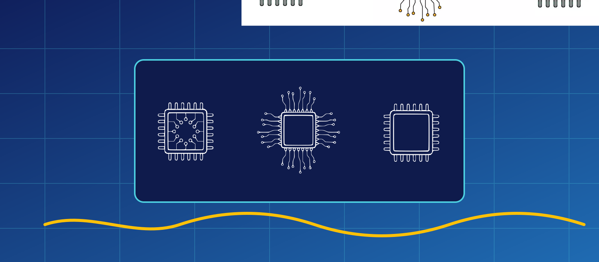
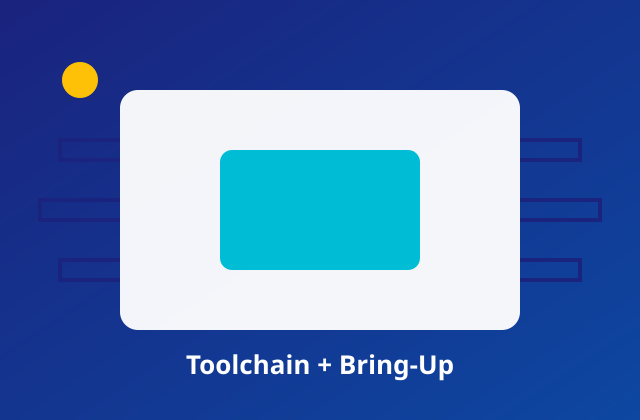
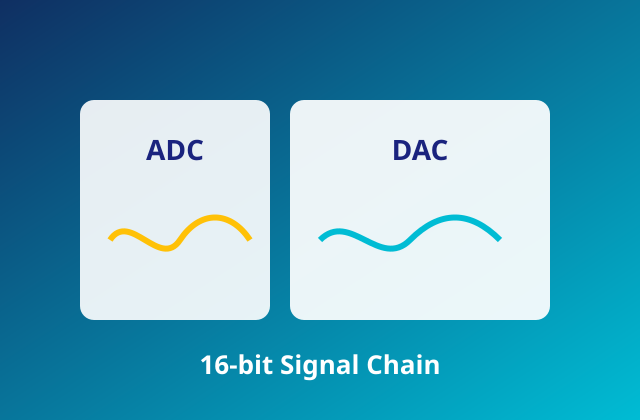
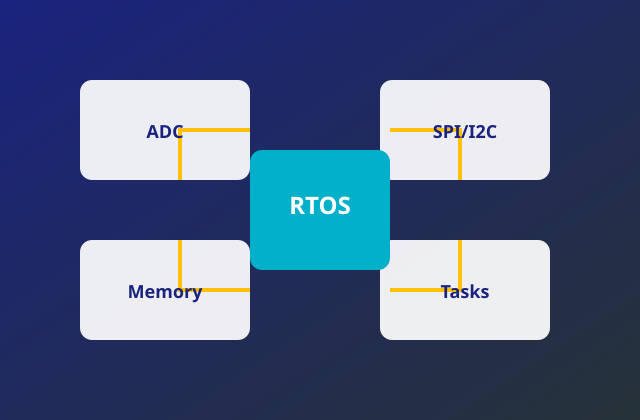

Embedded Systems Developer · ADUCM410QSPZ · ARM Cortex-M33
Electronics & Computer Systems Engineer
Designing reliable, measurable firmware from board bring-up to full system integration.
Case studies
Featured projects
-

Foundation & Toolchain Mastery
Configured Keil MDK, J-Link debugging workflow, startup code validation, and deterministic GPIO control as a first milestone.
View case study → -

High-Precision Analog
Implemented calibrated 16-bit ADC sampling, DAC waveform output, and digital filtering for stable low-noise measurements.
View case study → -

Complete Integrated System
Combined ADC pipelines, SPI/I2C sensors, robust memory planning, and RTOS task orchestration into one production-style stack.
View case study →
Ready to collaborate on embedded products?
I build sensor-rich, real-time, production-minded systems focused on traceability, power awareness, and dependable field performance.